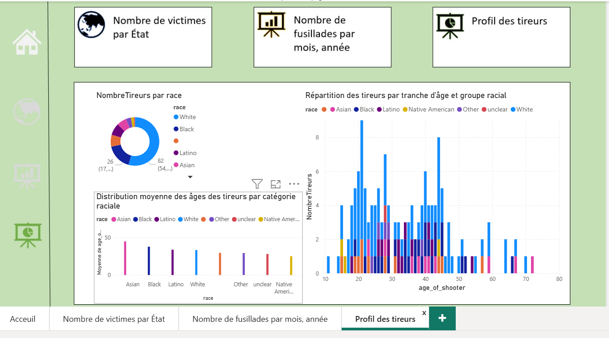

Dans le cadre de ma formation en Science des Données, j'ai réalisé un projet complet de reporting sur Power BI basé sur les données de l'organisation Mother Jones. L'objectif était de transformer des données brutes et complexes en un outil de pilotage visuel permettant de dégager des insights significatifs sur les fusillades de masse aux États-Unis
Le projet a été réalisé en travail de groupe (5 personnes), avec un suivi assuré par des réunions hebdomadaires pour garantir la cohérence de l'analyse. Les ressources mobilisées incluent les méthodes de statistiques descriptives, les techniques d'analyse exploratoire ainsi que les bonnes pratiques de datavisualisation.
Pour mener à bien l’étude, nous avons utilisé Microsoft Power BI, notamment Power Query pour le traitement de données et le langage DAX pour la création d'indicateurs avancés. Les livrables finaux comprenaient un rapport interactif (.pbix) et la base de données enrichie.
La démarche a débuté par une phase d'audit des données brutes (base Mother Jones 1982-2024) afin d'identifier les types de variables et de corriger les éventuelles incohérences. Nous avons ensuite défini un axe d'analyse précis servant de fil conducteur à notre tableau de bord. Les données ont été nettoyées et structurées pour permettre une analyse temporelle et géographique fiable, aboutissant à la conception d'un dashboard ergonomique privilégiant la clarté visuelle et la synthèse des insights.
J'ai également renforcé ma rigueur dans la gestion des livrables et le respect des standards de présentation professionnelle.
